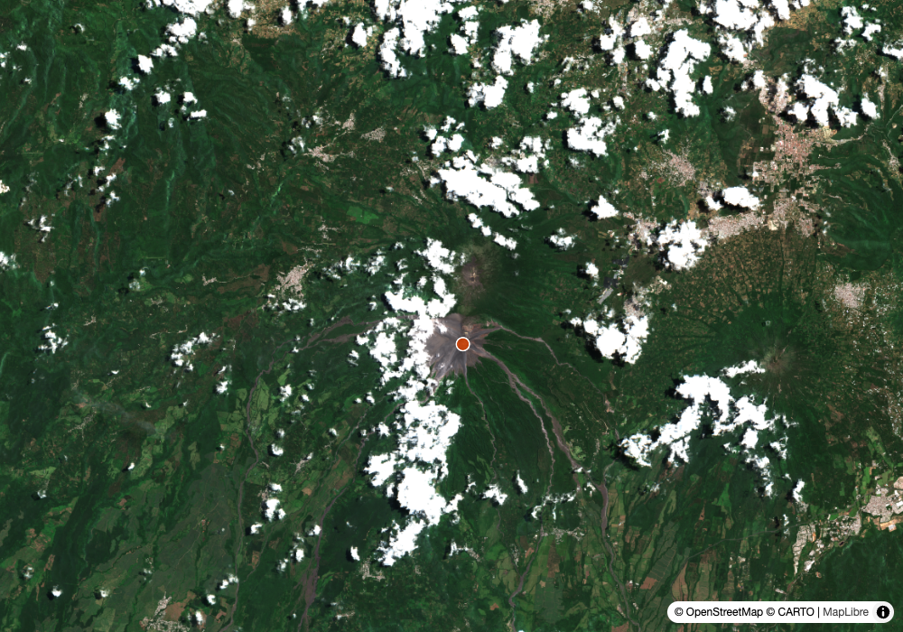
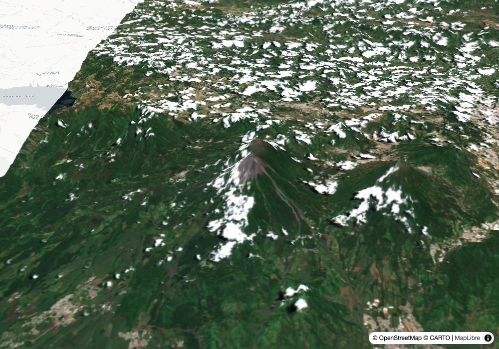

Round 1 — the bug №5 filed, closed
1
antimeridian
polar monitoring
Input
Iceberg B22A again. Does the archive coverage read correctly now?
What the tools returned
S1D_EW_GRDM_1SDH_20260805T074009 ascending covers_aoi_pct: 43.4
S1D_EW_GRDM_1SDH_20260803T075543 ascending covers_aoi_pct: 83.2
S1C_EW_GRDM_1SDH_20260802T080431 ascending covers_aoi_pct: 15.0
(field test №5, same query: 0.0 / 0.0 / 0.0)
Our read
Fixed, and the numbers discriminate rather than all reading zero. The Aug 3 scene is 83.2% — the exact value the regression check was pinned to when the fix landed. Scene bboxes here wrap west-greater-than-east (177.58 → −171.51), which the old overlap math read as a degenerate box; coverage now splits any crossing box at ±180 and sums the parts.Learning → The card that filed this in №5 said "a field test that only shows the wins isn't a test." Twenty-four hours from filed to verified is the argument for keeping a bug on its own card instead of a private list.
_bbox_coverage_pct / _union_coverage_pct, antimeridian-safe
2
state
the regression case
Input
Show me Calgary, and prove the mosaic didn't render as a swipe.
What the tools returned
state.compare: false
state.coverage_pct: 100.0
state.layers: ["Jul 29 · 11UPS", "Jul 29 · 11UQS"]
Our read
Previously this could only be checked by a human opening the file and dragging a divider that shouldn't exist. render_map now returns the state it built the HTML from — bbox, per-layer bounds and tiles, the compare flag, coverage. The two assertions that matter are now one line each, and they run in CI on every commit. live map ↗
live map ↗
Learning → Both rendering bugs this repo has shipped were caught by eye. Exposing the state is what moved that class of bug from "someone notices" to "CI fails".
render_map state, coverage_set expansion
Round 2 — a volcano erupted this morning
3
live event
disaster response
Input
GDACS is reporting Fuego. What does the imagery show, and when do we get another look?
What the tools returned
GDACS Eruption Fuego VO from 2026-08-05T08:09:00 [-90.88, 14.473]
full_coverage_set date 2026-08-01 union 100%
S2B_15PYS_20260801 cloud 21.7% covers 93.7%
S2B_15PYR_20260801 cloud 0.98% covers 42.8%
next_pass: SENTINEL-2C 2026-08-06 16:39 UTC optical
Our read
The eruption was reported 08:09 UTC this morning. The freshest usable optical is Aug 1, four days before it — so this is the before, not the after. The next optical pass is tomorrow 16:39 UTC, mid-morning local and in daylight, which is the first real chance at an after image.
live map ↗Learning → The honest answer to a same-day event is often "we have the before, here is when the after arrives." Saying that beats presenting four-day-old imagery as if it showed the eruption.
active_events (GDACS volcanic), coverage_set, next_pass, stack panel with eo-predictor
4
composed conditions
the lahar question
Input
Fuego just erupted. What are the conditions there right now?
What the tools returned
weather_summary(14.473, -90.88):
2026-08-05 precip 20.2 mm wind max 8.8 km/h
2026-08-06 precip 17.0 mm wind max 11.4 km/h
2026-08-07 precip 4.9 mm
temp max 8.5 C (grid cell elevation is near the 3,763 m summit)
Our read
Fresh ash and 20 mm of rain on the same day, with 17 mm more tomorrow. That combination is the precondition for lahars, the volcanic mudflows that are historically the deadlier hazard at Fuego. groundstation does not model lahars and does not say one is coming — it composes what the sources report and lets a responder draw the line. Note the temperature: 8.5°C max is the summit grid cell at ~3,763 m, not the towns below.Learning → This is the whole conditions-brief thesis in one card. The useful output was not a model, it was two ordinary facts placed next to each other, plus the elevation caveat that stops a reader misreading the temperature.
weather_summary composed with active_events, conditions-not-predictions discipline
5
3d + state
terrain context
Input
Show me Fuego in 3D so I can see what the drainages look like.
What the tools returned
state.exaggeration: 1.7
state.terrain: true
state.layers: [{S2 2026-08-01}, {fill, deferred: true}]
state.coverage_pct: 94.0
state.coverage_pct_loaded: 100.0
coverage_note: the drape covers 94% of the view on load, the rest is
terrain with no imagery until someone clicks Load full coverage
Our read
A 3,763 m stratovolcano at 1.7× vertical exaggeration, which is what makes the radial drainages legible — and those drainages are where lahars run. The 3D state reports two coverage numbers because they are two different facts: 94% is what draws on load, 100% is what the button adds. The second scene is marked deferred because it is embedded but not requested until someone clicks.
live 3D ↗Learning → Copying the 2D coverage warning would have been wrong here: in 3D the uncovered area is terrain with no imagery, not blank, and only the main layer draws on load. The note had to be written for 3D rather than reused.
render_map_3d state with deferred extras, 3D-specific coverage note
Round 3 — what changed since yesterday
6
storm tracking
the moving target
Input
Dolphin was the only Orange alert yesterday. Where is it now?
What the tools returned
EONET Aug 4 12:00Z [140.6, 25.2] GDACS Orange
EONET Aug 5 06:00Z [137.2, 25.6] GDACS Orange
weather at 25.6N 137.2E:
2026-08-05 wind max 99.7 km/h precip 110.5 mm
2026-08-06 wind max 84.7 km/h precip 42.7 mm
2026-08-07 wind max 40.0 km/h precip 2.6 mm
Our read
It moved roughly 350 km west in 18 hours and it is weakening: peak winds 110 → 100 → 85 → 40 km/h across today and the next two days, with rainfall collapsing from 110 mm today to under 3 mm by Friday. Still the only non-Green alert on Earth, and still over open ocean where optical imagery has nothing useful to add. No map on this card: the artifact would be two dots over open ocean with no imagery under them, which is exactly what field test №5 found and not worth dressing up.Learning → Re-running the same query a day later is its own kind of test. The field-test cadence caught a moving storm decaying, which no single-run snapshot would have shown.
active_events across two runs, weather_summary as a decay signal
7
conditions brief
fire season, Europe
Input
GDACS has forest fires in northern Portugal. What are the conditions?
What the tools returned
signals:
- no rain ≥1mm in the last 14 days
- peak wind today 21 km/h from the NW
- 1 active wildfire within ~150 km
next_looks: SENTINEL-1A 2026-08-05 17:55 UTC (radar)
SENTINEL-1C 2026-08-06 06:49 UTC (radar)
errors: none
Our read
Fourteen days with no meaningful rain, moderate wind from the northwest, one active fire in range. The next two looks are both radar, which for a fire is the wrong instrument for burn extent but the right one for cloud and smoke penetration — worth saying rather than presenting a pass as a pass.Learning → The signals are deliberately verbatim facts with no severity score. "No rain ≥1mm in 14 days" is checkable; "high fire risk" would not be, and is not ours to say.
conditions_brief over a new geography, next_pass composed in
8
attribution
the stack panel
Input
On the Fuego map, what DevSeed tools actually did the work?
What the tools returned
stack panel rows with a DevSeed badge:
TiTiler created tiling
rio-tiler created tiling
eoAPI created access (not active — no VEDA layer here)
eo-predictor created data (next_pass informed this answer)
Gazet created access
stack_facts passed: geocoded, events, passes
Our read
Four DevSeed-built components on one artifact, and eo-predictor is new to the panel — next_pass has been using its constellation definitions since yesterday without saying so. It only appears when the caller declares passes: true, because next_pass returns data rather than an artifact and nothing in the layers can reveal it.Learning → Two DevSeed tools have now turned out to be already in use and unclaimed — eoAPI behind VEDA, eo-predictor behind next_pass. Worth a habit: when adding a capability, ask whether one of ours is already underneath it.
stack_layer with the passes fact, honest opt-in attribution
Reproduce
git clone https://github.com/dannybauman/groundstation && cd groundstation
bash scripts/doctor.sh # walks the setup chain, prints the fix
uv run evals/unit_checks.py # 83 offline checks
uv run evals/run_evals.py # live checks against real endpoints
uv run scripts/field_test.py docs/field-test-2026-08-06.cases.json # rebuild this page